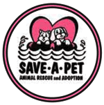

PRMG Client Profiles
PRMG's Clients represent some of Long Island's leading organizations in their fields. As you review the logos below (most of which were created by PRMG) and read the descriptions, you will recognize that our client diversity enhances our ability to deal with almost any issue or challenge faced by your organization.
All links and samples will open a new browser window.
Breast Cancer Help, Inc.
Breast Cancer Help, Inc. is a not-for-profit grass roots organization that focuses on action and advocacy to eradicate breast cancer. Founded in 1994 by Lorraine Pace, a breast cancer survivor, and Father Thomas Arnao, the group promotes education and awareness of breast cancer issues. Pace also founded the West Islip breast cancer mapping project, which pinpointed breast cancer clusters. This original mapping project, which began the breast cancer environmental movement, has spread to other parts of New York, the U.S. and abroad. Breast Cancer Help's commitment to the fight against breast cancer includes making lease payments in excess of $7,700 per month for a digital mammography system at Stony Brook University Hospital, thereby ensuring that Long Islanders have access to the best possible diagnosis and medical care available. Breast Cancer Help also operates a Cancer Help and Wellness Center in Lindenhurst, where the goal is to provide increased cancer awareness, promoting early detection and while providing patients and survivors with needed support.
Utopia Home Care
Manuel and Angelina Martinez formed Utopia Home Care, Inc., a family-owned home health care organization experienced in every level of home health care, in 1983. Services include accident rehabilitation, pediatric care, elder care, treatment for those patients with disabilities, as well as for those with long term and short term illness. Utopia meets the full range of the patient's needs from Home Health and Live-in Aides to Registered Nurses and therapists. Utopia is an accredited member of the Joint Commission on Accreditation of Healthcare Organizations. Utopia, based in Kings Park, has 21 offices located in New York, Connecticut and Florida and has over 1,500 dedicated employees servicing thousands of patients each year. With home health care seen as one of the fastest growing industries in the nation, Utopia has been recognized as one of New York Metro region's fastest growing private companies and Long Island's largest minority-owned business.
Long Island Game Farm
From alligators to lemurs to kangaroos and scores of animals in between, the Long Island Game Farm Wildlife and Children's Zoo is the place for nature lovers of all ages. And unlike most zoos, guests can actually feed and interact with the animals! The Game Farm features hundreds of animals, including an 18-foot giraffe, cougars, Barbados sheep, peacocks, kangaroos, kinkajous and the only lemurs born and bred on Long Island. Animal collections include both exotic and indigenous breeds, with monkeys, buffalo, colorful parrots, zebra, aoudads, camels, ostrich, alligator, and much more.
Green Mountain Springs

Green Mountain Springs has a rich, flavorful history. For more than three generations, the Flint family has bottled water from the Green, Smokey and Appalachian Mountains. Like many immigrants, family friend Roberto Gallo entered the United States through New York. But, blessed with an incredible sense of direction, Gallo made his way to the Green Mountain State: Vermont. One day, while walking the forest of the Green Mountains with his best friend, Ray J. Flint, he stumbled upon a babbling mountain spring. Thirsty, he knelt down and sampled the water. The delightful taste transported Giovanni to the days of his youth when he often drank from the fountains of his village, which drew water from ancient Roman aqueducts. For many years the men bottled the secret spring water to share with their friends and loved ones on special occasions. After three generations, encouraged by the accolades the water received, the Flint family formed Green Mountain Springs and began their quest to "the thirst of the world...one drop at a time."
School-Business Partnership of Long Island
Fred Breithut founded SBPLI in 1984 with the goal of developing partnerships between local high schools and businesses that would provide students with practical experience and curriculum development, while helping the business community develop its future workforce. Over 70 such partnerships have been formed. Long Island FIRST was formed in 1999 for the purpose of developing a Long Island Regional First Robotics competition.
Save-A-Pet Animal Rescue
Save-A-Pet Animal Rescue Inc. was established in 1994 and is located in Port Jefferson Station. Save-A-Pet works with The Town of Brookhaven Animal Shelter, to place homeless animals into new homes with loving families. All of the animals that come to Save-A-Pet are spayed, neutered, tested for diseases and vaccinated. Prospective adopters are thoroughly screened and matched with the most suitable pet for them and their family. Save-A-Pet Animal Rescue is a non-profit, no-kill shelter and is a safe haven for all of the animals that enter it.
Promote LI
Founded in 1993 by the late Frank Tracey, the mission of Promote Long Island is to foster and promote public awareness and appreciation of Long Island, particularly the benefits of living on Long Island and Long Island's parks, beaches, cultural, educational, recreational and tourist activities. In addition, Promote LI works to bolster the regional economy; and encourage a positive community identity for the Long Island region, through activities designed to rally Long Island spirit and pride, and the expanded use of the Long Island (LI) address.
Black Tie Caterers
Chef Steven Biscari-Amaral offers sophisticated worldly cuisine to the world's most demanding and knowledgeable clientele: visitors to the Hamptons. Steve's impressive resume boasts experience in the world's finest restaurants, appearances on television, and extensive training. Black Tie Caterers provides services that are "seamless and sensational" for weddings, corporate gatherings, private parties, and wine pairings dinners. He has a great personality so don't fear that you will be meeting with any "temperamental chef" issues. He wants his clients to be happy and he works hard to not only satisfy them, but exceed their expectations. Steve offers his services to all of the East End and even beyond.
School Construction Consultants
SCC is a construction management and consulting firm, providing services to Long Island schools, libraries and fire districts. The company manages construction for a diversity of multiple-contract projects typically including the construction of additions, new buildings, district-wide technology upgrades, infrastructure modernization and capital improvements.
Trio Restaurant
Trio - a restaurant of New American Cuisine that prides itself on excellent location, elegant atmosphere and exquisite cuisine - serves guests at 69 East Main Street in Patchogue, right next door to the Patchogue Theatre for the Performing Arts. The atmosphere is elegant and the dining is delightful. Patrons enjoy live music every Friday night.
Fusion Catering
Fusion is a full-service catering facility and night club located on three floors in Medford, N.Y. Its skilled chefs and bartenders provide an extensive menu and are suited to handle all manner of parties and community affairs. Fusion's charitable activities have included supporting Save-A-Pet Animal Rescue.
Earthrite Textile Recycling
Earthrite Textile Recycling helps facilitate the clothing bin program for Breast Cancer Help, making it easy for local residents to join in the fight against breast cancer, while at the same time preserving the environment through the recycling of clothing. Initiated in 1998 in partnership with Earthrite, the program has raised over $250,000 to assist the organization in ensuring that Long Islanders have access to the best possible medical diagnosis and treatment, as well as in supporting men and women combating breast cancer and other cancers.
Cartridge World, Smithtown
Cartridge World was founded in South Australia in 1991. In addition to providing refill services, Cartridge World's more than 600 locations worldwide deal in compatible and original manufacturer cartridges for inkjet printers, laser printers, fax machines and photocopiers as well as additional supplies for fax machines and copiers. Cartridge World was recently named the No. 1 Toner Replacement Service franchise for 2004 in Entrepreneur Magazine.
DeGennaro & Associates
Huntington-based DeGennaro& Associates is a leading executive staffing firm. Founder Kenneth A. DeGennaro brings over 20 years of experience from some of the regions largest and most well respected companies, providing a unique perspective and insight to organizations and their key leaders as they seek to manage the challenges of talent acquisition and retention in today's increasingly complex and competitive business environment. Ken has served in senior human resources positions, most recently as Vice President of National Staffing at JPMorgan Chase. Mr. DeGennaro has developed and implemented Human Resources strategies in a variety of businesses and corporate functions including Retail Banking and Consumer Financial Services, Credit Card Marketing and Risk Management, Private Banking and Wealth Management, Investment Banking, Insurance, Human Resources, Financial Management, and Information Technology.
Law Offices Represented by PRMG
Robert Cava
The Law Offices of Robert J. Cava, P.C. is an insurance defense firm comprised of experienced litigation attorneys that help insurance companies defend various types of liability claims.
Russell I. Marnell
The Law Offices of Russell I. Marnell is a fully staffed, computerized law firm concentrating its practice in matrimonial, divorce and other family law matters. The firm was formed by Marnell in 1985 to provide its New York area clients with excellent representation and service.
Sullivan & Kehoe
The Law Offices of Sullivan & Kehoe formed in 2002, when Michael Sullivan and Francis Kehoe merged their 25 years of combined experience. The firm concentrates on Social Security Disability law and serves clients from offices in New York, Mineola, Kings Park and Riverhead.
David Okrent
The Law Offices of David R. Okrent, located in Huntington, N.Y., are dedicated to helping the elderly find the right answers to all their legal questions. The office works with clients to develop plans to assist in protecting their future independence and dignity.
Carol Mellor
Carol Mellor has over 30 years experience as an attorney, including over 20 years of concentration in wills and estate administration, elder law, civil rights and discrimination litigation.
John Arweiler
John Arweiler handles legal matters in various areas of the law, including Real Estate, Business Organizations and Transactions, Elder Law, DUI and DWI, Litigation, Probate/Estate Planning and Administration. He was admitted to the New York State Bar in 1972.
Robert Cox

Robert B. Cox, Jr. practices law in New York and is the author of We Gotta Talk 'Baby': Making Responsible Choices in the 21st Century. The recently-published book promotes and advances a guide for unwed persons facing a recently disclosed pregnancy. Before earning his JD in 1993, Mr. Cox received a portion of his early education as a student participant in Project Upward Bound© and A Better Chance© — both college preparatory programs designed for youth advancement.
PRMG also represents the attorneys Robert Montefusco and John Schettino.
PRMG Video Production Clients
Babylon Republican Committee
Breast Cancer Help, Inc.
Sullivan & Kehoe
Lee Snead for Assembly
Long Island Game Farm
Trio Restaurant
PRMG Political/Elected Official Clients/Employments
Over the years, PRMG and its staff have worked with some of Long Island's leading political organizations and governmental leaders. These employments and consultancies have included:
Government Employments
Congressman Rick Lazio
Nassau County Executive Tom Gulotta
Suffolk County District Attorney James Catterson
New York State Assemblyman Phil Boyle
Political Campaigns
Lazio for a New Congress - 1992*
Boyle for Assembly - 1994*
Lazio for Congress - 2000*
Joan Johnson for Congress - 2000
Barton for District Court - 2001*
Lee Snead for Assembly - 2002
Lori Hulse Montefusco for Riverhead School District - 2003*
Brian Brady for Patchogue-Medford School District - 2003*
Patchogue Village Elections - 2004*
Babylon Republican Committee - 2003
*Denotes winning campaign